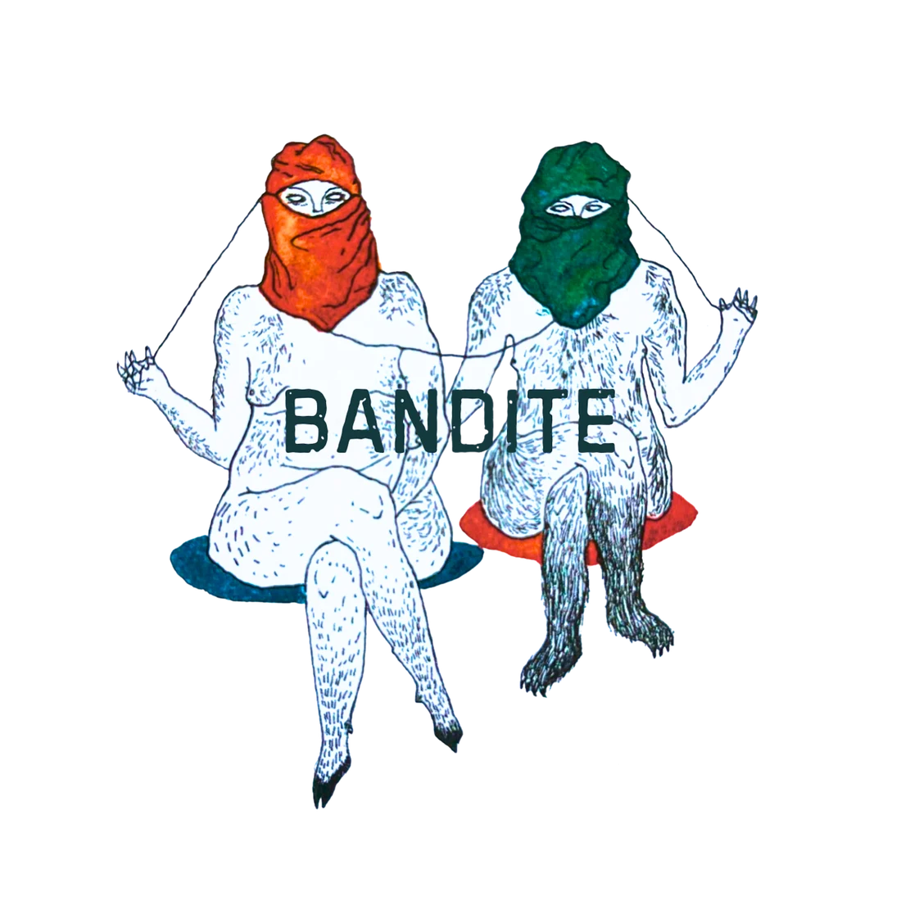

BANDITE is a collective founded in 2023 by Valentina Bosio and Simona Sala, two artists whose research and creative practices meet at the intersection of art and activism. Their work is rooted in an anthropological approach to physical theatre and moves fluidly across theatre, dance, visual arts, video, and multimedia technologies. Their aim is to move beyond traditional performative languages by interweaving diverse expressive codes, restoring theatre to its nature as a collective space—a place for reflection and confrontation with the complexities of the present. Their urgency lies in observing and narrating what remains at the margins: stories and identities rendered invisible or forgotten by dominant narratives.
BANDITE’s practice is grounded in an understanding of art as a practice of crossing—capable of connecting territories, languages, and communities. The collective continuously seeks to build spaces of dialogue between bodies and memories, between the real and the digital, between the present and the ancestral. The objective is not to represent, but to activate: to generate experiences in which the audience becomes part of a collective ritual of listening, awareness, and transmission. Their methodology draws on Witness Action, an interactive and participatory approach to performance developed from 2015 by Simona Sala in collaboration with the director of the Grotowski Institute (PL). This approach moves beyond aesthetics to activate collective witnessing processes, fostering mutual dignity and social engagement through art.
In 2024, BANDITE created Presenti Mai Assenti (“Present, Never Absent”), a site-specific immersive soundwalk conceived for CommemorAction—a day of resistance against the deadly regime of borders. The piece unfolds along the migratory route between Claviere (Italy) and Montgenèvre (France). Participants walk while listening via headphones to an original sound composition blending field recordings, Mediterranean and Chiapas chants, and the poetry of Rahma Nur, layered with the sound of their footsteps and the surrounding landscape. That same year, BANDITE also curated the exhibition Orizzonti Verticali – Sulle tracce di memorie esuli (Vertical Horizons – In the Footsteps of Exiled Memories), hosted in the Torre Delfinale in Oulx, a symbolic waypoint on the migratory route to France. The exhibition featured photographs, audiovisual works, drawings, objects, and installations by Enrico Carpegna, Beppe Gromi, Fabio Russo, and Simona Sala. It explored themes of walking, memory, and horizon, functioning as a “memory activator” that sparked personal recollections among visitors—often linked to the region’s own history of hardship and marginality in the Alpine borderlands.
Continuing this trajectory, BANDITE has developed a new site-specific project, Unseen (2026), set between Montgenèvre and La Vachette near Briançon (France). Thanks also to the contribution of SFR Création, a program run by the University of Grenoble Alpes, in this project they have designed and developed a customized app called Sonic WalkScape, which makes all the immersive walks BANDITE has produced easily accessible to participants. Unseen invites audiences to engage with the story of Blessing Matthew, a young woman who died at this border in May 2018. Her death was investigated by a group of researchers, including Border Forensics and geographer Cristina Del Biaggio, as part of a broader inquiry into the deaths of people on the move at Europe’s frontiers. In the past year, BANDITE has been invited to present their work at various academic conferences intersecting the fields of border art, activism, migration, and the humanities, contributing to broader conversations around artistic practices as tools of political engagement and collective memory.